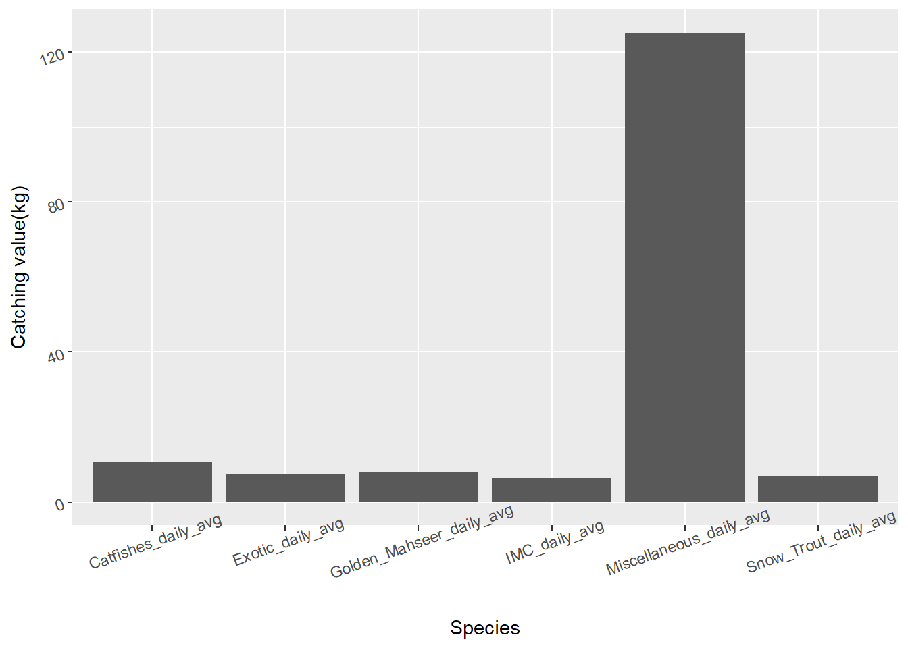

Code
library(tidyverse)
library(stringr)
library(gtsummary)
library(readr)library(tidyverse)
library(stringr)
library(gtsummary)
library(readr)rawdata <- read_csv("Untitled spreadsheet - Sheet1.csv")rawdata |> select(State) |> tbl_summary()| Characteristic | N = 6841 |
|---|---|
| State | |
| Bihar | 141 (21%) |
| Jharkhand | 10 (1.5%) |
| Utrrakhand | 37 (5.4%) |
| Uttar pradesh | 351 (51%) |
| West Bengal | 145 (21%) |
| 1 n (%) | |
rawdata |> select(District) |> tbl_summary()| Characteristic | N = 6841 |
|---|---|
| District | |
| Ballia | 21 (3.1%) |
| Bally | 1 (0.1%) |
| Begusarai | 18 (2.6%) |
| Bhagalpur | 10 (1.5%) |
| Bhojpur | 12 (1.8%) |
| Bijnor | 24 (3.5%) |
| Budaun | 8 (1.2%) |
| Buland shahr | 3 (0.4%) |
| Bulandsahar | 2 (0.3%) |
| Bulandshahar | 5 (0.7%) |
| Bulandshar | 6 (0.9%) |
| Buxar | 12 (1.8%) |
| Chandauli | 13 (1.9%) |
| Dehradun | 4 (0.6%) |
| East Burdwan | 4 (0.6%) |
| Etah | 9 (1.3%) |
| Farrukhabad | 19 (2.8%) |
| Fatehpur | 14 (2.0%) |
| Gaziabad | 1 (0.1%) |
| Ghazhipur | 19 (2.8%) |
| Ghaziabad | 3 (0.4%) |
| Hardoi | 12 (1.8%) |
| Haridwar | 20 (2.9%) |
| Hooghly | 7 (1.0%) |
| Jyotiba Phule Nagar | 8 (1.2%) |
| Kannauj | 7 (1.0%) |
| Kanpur | 13 (1.9%) |
| Katihar | 10 (1.5%) |
| Kaushambi | 15 (2.2%) |
| KHEJURI | 1 (0.1%) |
| Malda | 10 (1.5%) |
| Meerut | 13 (1.9%) |
| Mirzapur | 23 (3.4%) |
| Munger | 22 (3.2%) |
| Murshidabad | 29 (4.2%) |
| Muzafarnagar | 5 (0.7%) |
| Muzaffarnagar | 6 (0.9%) |
| Nadia | 9 (1.3%) |
| NANDIGRAM | 1 (0.1%) |
| North 24 Pgs | 11 (1.6%) |
| Paratapgarh | 6 (0.9%) |
| Patna | 28 (4.1%) |
| Pauri | 7 (1.0%) |
| Pratapgarh | 3 (0.4%) |
| Prayagraj | 36 (5.3%) |
| Raebareily | 10 (1.5%) |
| Sahibganj | 10 (1.5%) |
| Sahjahanpur | 2 (0.3%) |
| Samastipur | 4 (0.6%) |
| Sankrail | 4 (0.6%) |
| Sant Ravidas Nagar | 9 (1.3%) |
| Saran | 25 (3.7%) |
| Shahjahanpur | 12 (1.8%) |
| Shyampur | 3 (0.4%) |
| South 24 Parganas | 16 (2.3%) |
| SUTAHATA | 36 (5.3%) |
| Uluberia | 13 (1.9%) |
| Unnao | 10 (1.5%) |
| Uttrakashi | 6 (0.9%) |
| Varanasi | 14 (2.0%) |
| 1 n (%) | |
rawdata |> select(Education) |> tbl_summary()| Characteristic | N = 6841 |
|---|---|
| Education | |
| Graduate | 15 (2.3%) |
| Higher secondary education | 5 (0.8%) |
| Illiterate | 273 (41%) |
| middle education | 2 (0.3%) |
| Middle education | 23 (3.5%) |
| primary education | 4 (0.6%) |
| Primary education | 207 (31%) |
| Primary Education | 54 (8.2%) |
| secondary education | 2 (0.3%) |
| Secondary education | 75 (11%) |
| Unknown | 24 |
| 1 n (%) | |
rawdata |> select(Occupation_Main, Occupation_Subsidiary) |> tbl_summary()| Characteristic | N = 6841 |
|---|---|
| Occupation_Main | |
| 1 | 8 (1.2%) |
| 2 | 2 (0.3%) |
| Agriculture | 2 (0.3%) |
| Agriculture,& labouring | 7 (1.1%) |
| Agriculture,& shops | 2 (0.3%) |
| Business/Labour | 2 (0.3%) |
| Daily Labour | 2 (0.3%) |
| Driving | 1 (0.2%) |
| farming | 4 (0.6%) |
| Farming | 15 (2.3%) |
| farming/labor | 1 (0.2%) |
| Farming/labour | 2 (0.3%) |
| Farming/Labour | 1 (0.2%) |
| Farming/sand mining | 1 (0.2%) |
| Fishin | 1 (0.2%) |
| fishing | 86 (13%) |
| Fishing | 491 (75%) |
| labour | 6 (0.9%) |
| Labour | 4 (0.6%) |
| Labour, Farming | 1 (0.2%) |
| labouring | 9 (1.4%) |
| labouring & Agriculture | 4 (0.6%) |
| Shop keeper | 4 (0.6%) |
| Weldar | 2 (0.3%) |
| Unknown | 26 |
| Occupation_Subsidiary | |
| Ag.Farming | 26 (4.3%) |
| Agri. Labour | 7 (1.2%) |
| Agriculture | 66 (11%) |
| Agriculture farming | 1 (0.2%) |
| Agriculture,& labouring | 33 (5.5%) |
| Agriculture,fishing | 2 (0.3%) |
| Boat driver | 1 (0.2%) |
| Boat operation and labour | 1 (0.2%) |
| Boating | 1 (0.2%) |
| business | 1 (0.2%) |
| Business | 1 (0.2%) |
| Carpenter | 1 (0.2%) |
| Cattle farming | 1 (0.2%) |
| Civil labour | 2 (0.3%) |
| Construction labour | 2 (0.3%) |
| Daily labor | 3 (0.5%) |
| daily wage labour/ River Diver | 5 (0.8%) |
| Farmers | 1 (0.2%) |
| farmig | 1 (0.2%) |
| farming | 3 (0.5%) |
| Farming | 57 (9.5%) |
| Farming business | 1 (0.2%) |
| Farming, pond | 1 (0.2%) |
| farming/labour | 1 (0.2%) |
| fishing | 28 (4.7%) |
| Fishing | 51 (8.5%) |
| Fishing + live stock | 5 (0.8%) |
| Fishing + live stock + agriculture+ labour | 23 (3.8%) |
| Fishing, labouring | 3 (0.5%) |
| fishing,Agriculture | 4 (0.7%) |
| Floriculture | 1 (0.2%) |
| Ganga Prahari | 1 (0.2%) |
| labour | 29 (4.8%) |
| Labour | 31 (5.1%) |
| Labour work | 3 (0.5%) |
| Labour, Agriculture | 4 (0.7%) |
| Labour, Live stock | 19 (3.2%) |
| labouring | 3 (0.5%) |
| Labouring | 22 (3.7%) |
| labouring & Agriculture | 31 (5.1%) |
| Live stock, Agriculture | 1 (0.2%) |
| Live stock, Labour | 2 (0.3%) |
| Masion | 1 (0.2%) |
| No | 79 (13%) |
| Only fishing | 3 (0.5%) |
| paddy sulture/ cattle farming/ Daily wage labour | 4 (0.7%) |
| Pigeon farming | 1 (0.2%) |
| shop | 1 (0.2%) |
| small trade | 33 (5.5%) |
| Unknown | 82 |
| 1 n (%) | |
rawdata |> select(State, Education, Occupation_Main, Occupation_Subsidiary) |> tbl_summary(by = State)| Characteristic | Bihar, N = 1411 | Jharkhand, N = 101 | Utrrakhand, N = 371 | Uttar pradesh, N = 3511 | West Bengal, N = 1451 |
|---|---|---|---|---|---|
| Education | |||||
| Graduate | 2 (1.4%) | 0 (0%) | 1 (2.7%) | 12 (3.4%) | 0 (0%) |
| Higher secondary education | 0 (0%) | 0 (0%) | 0 (0%) | 0 (0%) | 5 (4.0%) |
| Illiterate | 43 (30%) | 2 (20%) | 9 (24%) | 184 (53%) | 35 (28%) |
| middle education | 0 (0%) | 0 (0%) | 0 (0%) | 0 (0%) | 2 (1.6%) |
| Middle education | 5 (3.5%) | 0 (0%) | 0 (0%) | 1 (0.3%) | 17 (14%) |
| primary education | 0 (0%) | 0 (0%) | 4 (11%) | 0 (0%) | 0 (0%) |
| Primary education | 81 (57%) | 0 (0%) | 12 (32%) | 114 (33%) | 0 (0%) |
| Primary Education | 10 (7.1%) | 8 (80%) | 0 (0%) | 0 (0%) | 36 (29%) |
| secondary education | 0 (0%) | 0 (0%) | 0 (0%) | 0 (0%) | 2 (1.6%) |
| Secondary education | 0 (0%) | 0 (0%) | 11 (30%) | 37 (11%) | 27 (22%) |
| Unknown | 0 | 0 | 0 | 3 | 21 |
| Occupation_Main | |||||
| 1 | 8 (5.7%) | 0 (0%) | 0 (0%) | 0 (0%) | 0 (0%) |
| 2 | 2 (1.4%) | 0 (0%) | 0 (0%) | 0 (0%) | 0 (0%) |
| Agriculture | 0 (0%) | 0 (0%) | 2 (5.4%) | 0 (0%) | 0 (0%) |
| Agriculture,& labouring | 0 (0%) | 0 (0%) | 0 (0%) | 7 (2.0%) | 0 (0%) |
| Agriculture,& shops | 0 (0%) | 0 (0%) | 0 (0%) | 2 (0.6%) | 0 (0%) |
| Business/Labour | 0 (0%) | 0 (0%) | 0 (0%) | 0 (0%) | 2 (1.6%) |
| Daily Labour | 0 (0%) | 0 (0%) | 0 (0%) | 0 (0%) | 2 (1.6%) |
| Driving | 0 (0%) | 0 (0%) | 0 (0%) | 1 (0.3%) | 0 (0%) |
| farming | 0 (0%) | 0 (0%) | 2 (5.4%) | 2 (0.6%) | 0 (0%) |
| Farming | 0 (0%) | 0 (0%) | 8 (22%) | 7 (2.0%) | 0 (0%) |
| farming/labor | 0 (0%) | 0 (0%) | 0 (0%) | 1 (0.3%) | 0 (0%) |
| Farming/labour | 0 (0%) | 0 (0%) | 0 (0%) | 2 (0.6%) | 0 (0%) |
| Farming/Labour | 0 (0%) | 0 (0%) | 0 (0%) | 1 (0.3%) | 0 (0%) |
| Farming/sand mining | 0 (0%) | 0 (0%) | 0 (0%) | 1 (0.3%) | 0 (0%) |
| Fishin | 0 (0%) | 0 (0%) | 0 (0%) | 1 (0.3%) | 0 (0%) |
| fishing | 0 (0%) | 0 (0%) | 0 (0%) | 86 (25%) | 0 (0%) |
| Fishing | 131 (93%) | 10 (100%) | 15 (41%) | 216 (62%) | 119 (97%) |
| labour | 0 (0%) | 0 (0%) | 0 (0%) | 6 (1.7%) | 0 (0%) |
| Labour | 0 (0%) | 0 (0%) | 0 (0%) | 4 (1.2%) | 0 (0%) |
| Labour, Farming | 0 (0%) | 0 (0%) | 0 (0%) | 1 (0.3%) | 0 (0%) |
| labouring | 0 (0%) | 0 (0%) | 6 (16%) | 3 (0.9%) | 0 (0%) |
| labouring & Agriculture | 0 (0%) | 0 (0%) | 0 (0%) | 4 (1.2%) | 0 (0%) |
| Shop keeper | 0 (0%) | 0 (0%) | 4 (11%) | 0 (0%) | 0 (0%) |
| Weldar | 0 (0%) | 0 (0%) | 0 (0%) | 2 (0.6%) | 0 (0%) |
| Unknown | 0 | 0 | 0 | 4 | 22 |
| Occupation_Subsidiary | |||||
| Ag.Farming | 0 (0%) | 0 (0%) | 6 (16%) | 20 (6.1%) | 0 (0%) |
| Agri. Labour | 7 (5.0%) | 0 (0%) | 0 (0%) | 0 (0%) | 0 (0%) |
| Agriculture | 30 (21%) | 0 (0%) | 1 (2.7%) | 13 (3.9%) | 22 (26%) |
| Agriculture farming | 0 (0%) | 0 (0%) | 0 (0%) | 1 (0.3%) | 0 (0%) |
| Agriculture,& labouring | 0 (0%) | 0 (0%) | 0 (0%) | 33 (10%) | 0 (0%) |
| Agriculture,fishing | 0 (0%) | 0 (0%) | 0 (0%) | 2 (0.6%) | 0 (0%) |
| Boat driver | 0 (0%) | 0 (0%) | 0 (0%) | 1 (0.3%) | 0 (0%) |
| Boat operation and labour | 0 (0%) | 0 (0%) | 0 (0%) | 1 (0.3%) | 0 (0%) |
| Boating | 0 (0%) | 0 (0%) | 0 (0%) | 1 (0.3%) | 0 (0%) |
| business | 0 (0%) | 0 (0%) | 0 (0%) | 0 (0%) | 1 (1.2%) |
| Business | 0 (0%) | 0 (0%) | 0 (0%) | 0 (0%) | 1 (1.2%) |
| Carpenter | 0 (0%) | 0 (0%) | 0 (0%) | 1 (0.3%) | 0 (0%) |
| Cattle farming | 1 (0.7%) | 0 (0%) | 0 (0%) | 0 (0%) | 0 (0%) |
| Civil labour | 2 (1.4%) | 0 (0%) | 0 (0%) | 0 (0%) | 0 (0%) |
| Construction labour | 0 (0%) | 0 (0%) | 0 (0%) | 2 (0.6%) | 0 (0%) |
| Daily labor | 0 (0%) | 0 (0%) | 0 (0%) | 0 (0%) | 3 (3.6%) |
| daily wage labour/ River Diver | 5 (3.5%) | 0 (0%) | 0 (0%) | 0 (0%) | 0 (0%) |
| Farmers | 0 (0%) | 0 (0%) | 0 (0%) | 1 (0.3%) | 0 (0%) |
| farmig | 0 (0%) | 0 (0%) | 0 (0%) | 1 (0.3%) | 0 (0%) |
| farming | 0 (0%) | 0 (0%) | 0 (0%) | 3 (0.9%) | 0 (0%) |
| Farming | 0 (0%) | 10 (100%) | 1 (2.7%) | 33 (10%) | 13 (15%) |
| Farming business | 0 (0%) | 0 (0%) | 0 (0%) | 0 (0%) | 1 (1.2%) |
| Farming, pond | 0 (0%) | 0 (0%) | 0 (0%) | 1 (0.3%) | 0 (0%) |
| farming/labour | 0 (0%) | 0 (0%) | 0 (0%) | 1 (0.3%) | 0 (0%) |
| fishing | 0 (0%) | 0 (0%) | 0 (0%) | 28 (8.5%) | 0 (0%) |
| Fishing | 10 (7.1%) | 0 (0%) | 14 (38%) | 23 (7.0%) | 4 (4.8%) |
| Fishing + live stock | 5 (3.5%) | 0 (0%) | 0 (0%) | 0 (0%) | 0 (0%) |
| Fishing + live stock + agriculture+ labour | 23 (16%) | 0 (0%) | 0 (0%) | 0 (0%) | 0 (0%) |
| Fishing, labouring | 0 (0%) | 0 (0%) | 3 (8.1%) | 0 (0%) | 0 (0%) |
| fishing,Agriculture | 0 (0%) | 0 (0%) | 4 (11%) | 0 (0%) | 0 (0%) |
| Floriculture | 0 (0%) | 0 (0%) | 0 (0%) | 1 (0.3%) | 0 (0%) |
| Ganga Prahari | 0 (0%) | 0 (0%) | 0 (0%) | 1 (0.3%) | 0 (0%) |
| labour | 0 (0%) | 0 (0%) | 0 (0%) | 29 (8.8%) | 0 (0%) |
| Labour | 14 (9.9%) | 0 (0%) | 0 (0%) | 17 (5.2%) | 0 (0%) |
| Labour work | 0 (0%) | 0 (0%) | 0 (0%) | 0 (0%) | 3 (3.6%) |
| Labour, Agriculture | 4 (2.8%) | 0 (0%) | 0 (0%) | 0 (0%) | 0 (0%) |
| Labour, Live stock | 19 (13%) | 0 (0%) | 0 (0%) | 0 (0%) | 0 (0%) |
| labouring | 0 (0%) | 0 (0%) | 1 (2.7%) | 2 (0.6%) | 0 (0%) |
| Labouring | 0 (0%) | 0 (0%) | 7 (19%) | 15 (4.5%) | 0 (0%) |
| labouring & Agriculture | 0 (0%) | 0 (0%) | 0 (0%) | 31 (9.4%) | 0 (0%) |
| Live stock, Agriculture | 1 (0.7%) | 0 (0%) | 0 (0%) | 0 (0%) | 0 (0%) |
| Live stock, Labour | 2 (1.4%) | 0 (0%) | 0 (0%) | 0 (0%) | 0 (0%) |
| Masion | 0 (0%) | 0 (0%) | 0 (0%) | 0 (0%) | 1 (1.2%) |
| No | 11 (7.8%) | 0 (0%) | 0 (0%) | 68 (21%) | 0 (0%) |
| Only fishing | 3 (2.1%) | 0 (0%) | 0 (0%) | 0 (0%) | 0 (0%) |
| paddy sulture/ cattle farming/ Daily wage labour | 4 (2.8%) | 0 (0%) | 0 (0%) | 0 (0%) | 0 (0%) |
| Pigeon farming | 0 (0%) | 0 (0%) | 0 (0%) | 0 (0%) | 1 (1.2%) |
| shop | 0 (0%) | 0 (0%) | 0 (0%) | 0 (0%) | 1 (1.2%) |
| small trade | 0 (0%) | 0 (0%) | 0 (0%) | 0 (0%) | 33 (39%) |
| Unknown | 0 | 0 | 0 | 21 | 61 |
| 1 n (%) | |||||
# rawdata |> select(State, Exotic_daily_avg:Miscellaneous_daily_avg) |>
# separate(Exotic_daily_avg, sep = "-",
# c("Exotic_daily_avg_min", "Exotic_daily_avg_max")) |>
#
# mutate(Exotic_daily_avg_min = as.numeric(Exotic_daily_avg_min),
# Exotic_daily_avg_max = as.numeric(Exotic_daily_avg_max),
# avg_Exotic_daily = (Exotic_daily_avg_min + Exotic_daily_avg_max)/2) |>
#
# separate(Catfishes_daily_avg, sep = "-",
# c("Catfishes_daily_avg_min", "Catfishes_daily_avg_max")) |>
#
# mutate(Catfishes_daily_avg_min = as.numeric(Catfishes_daily_avg_min),
# Catfishes_daily_avg_max = as.numeric(Catfishes_daily_avg_max),
# avg_Catfishes_daily = (Catfishes_daily_avg_min + Catfishes_daily_avg_max)/2) |>
# select(State, avg_Exotic_daily, avg_Catfishes_daily) |>
# pivot_longer(names_to = "fish_info", values_to = "fish catch kg", avg_Exotic_daily:avg_Catfishes_daily) -> newdata# Define the columns you want to apply the operation to
columns_to_process <- grep("_daily_avg", names(rawdata), value = TRUE)
# Apply the operation to each column using a loop
processed_data <- rawdata
for (col in columns_to_process) {
col_min <- paste0(col, "_min")
col_max <- paste0(col, "_max")
col_avg <- paste0(col)
processed_data <- processed_data %>%
separate(col, sep = "-", into = c(col_min, col_max)) %>%
mutate(
!!sym(col_min) := as.numeric(!!sym(col_min)),
!!sym(col_max) := as.numeric(!!sym(col_max)),
!!sym(col_avg) := (!!sym(col_min) + !!sym(col_max)) / 2
) %>%
select(-c(col_min, col_max)) # Optionally remove the original min/max columns
}processed_data |> select(State, IMC_daily_avg:Miscellaneous_daily_avg) |>
pivot_longer(names_to = "Species", values_to = "Catching value(kg)",
IMC_daily_avg:Miscellaneous_daily_avg) -> daily_fishingdaily_fishing |> select(State, `Catching value(kg)`) |>
tbl_summary(by = State)| Characteristic | Bihar, N = 8461 | Jharkhand, N = 601 | Utrrakhand, N = 2221 | Uttar pradesh, N = 2,1061 | West Bengal, N = 8701 |
|---|---|---|---|---|---|
| Catching value(kg) | NA (NA, NA) | NA (NA, NA) | 1.50 (1.25, 2.50) | 2.50 (1.50, 4.00) | 125.00 (125.00, 125.00) |
| Unknown | 846 | 60 | 59 | 846 | 868 |
| 1 Median (IQR) | |||||
daily_fishing |> select(Species, `Catching value(kg)`) |>
tbl_summary(by = Species)| Characteristic | Catfishes_daily_avg, N = 6841 | Exotic_daily_avg, N = 6841 | Golden_Mahseer_daily_avg, N = 6841 | IMC_daily_avg, N = 6841 | Miscellaneous_daily_avg, N = 6841 | Snow_Trout_daily_avg, N = 6841 |
|---|---|---|---|---|---|---|
| Catching value(kg) | 2.50 (2.00, 4.00) | 2.00 (1.50, 2.50) | 2.50 (1.50, 3.50) | 1.50 (0.50, 2.00) | 4.00 (2.50, 7.50) | 1.50 (1.00, 2.50) |
| Unknown | 339 | 351 | 647 | 350 | 335 | 657 |
| 1 Median (IQR) | ||||||
daily_fishing |>
ggplot(aes(Species, `Catching value(kg)`)) +
geom_bar(stat = "identity", position = "dodge") +
theme(axis.text = element_text(angle = 20))Warning: Removed 2679 rows containing missing values (`geom_bar()`).